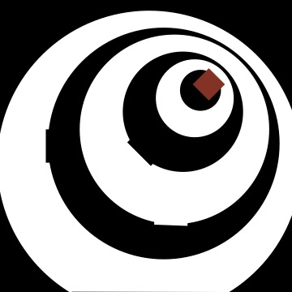
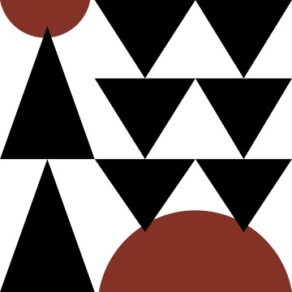
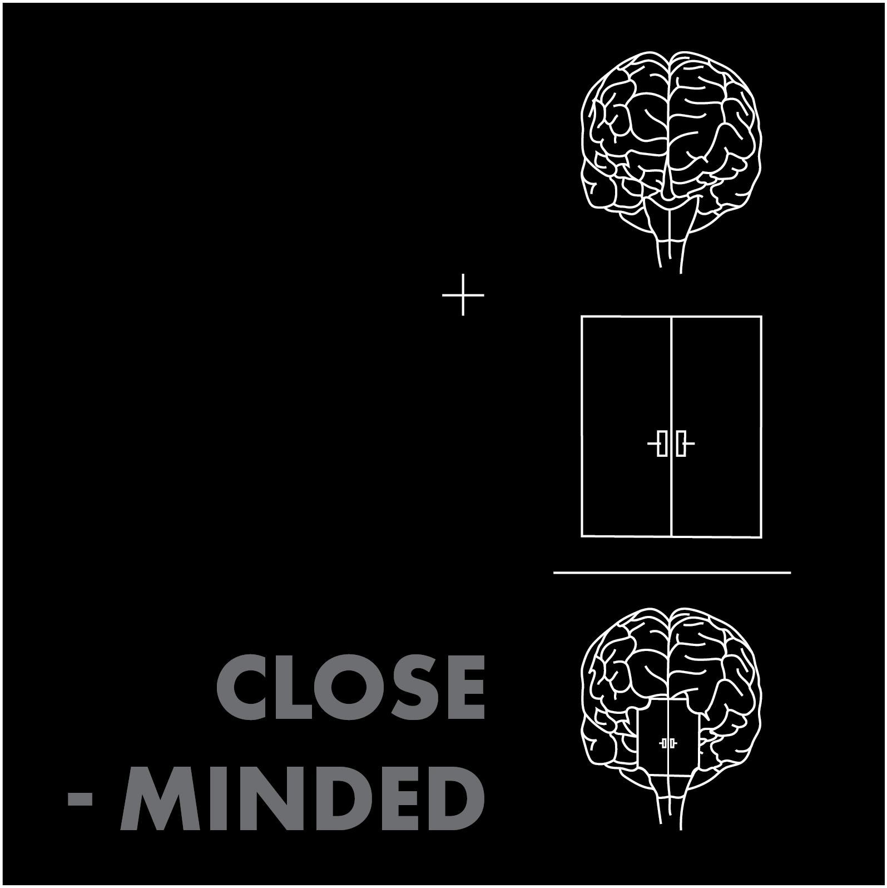
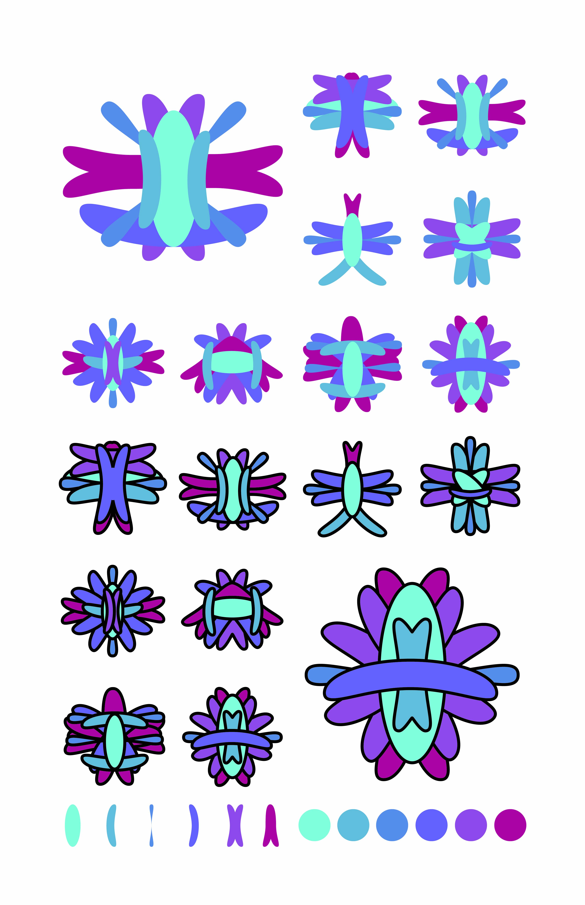
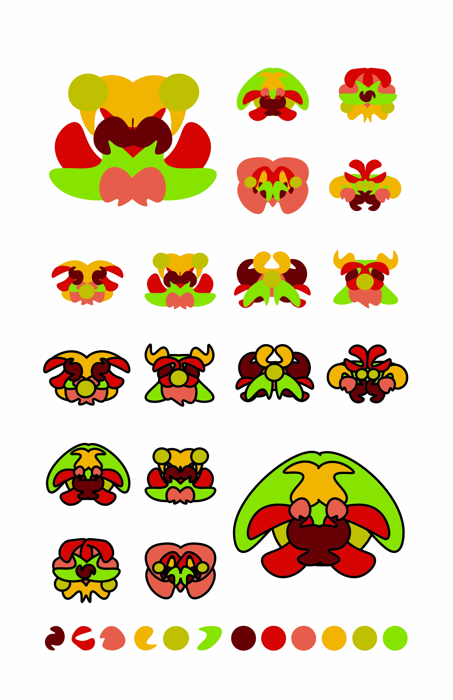

Early Compositions


These compositions were made using inspiration from the Constructivism art movement. I was interested in the use of geometric shapes and a limited color palette to create visually striking compositions. I used a combination of circles, squares, and triangles to create a sense of balance and harmony in my designs. The use of red, black, and white was intentional to create a strong contrast and draw attention to the focal points of the compositions.
Play on Words

The point of this project was to combine both illustrations and words to give a unique twist to a cliched phrase. I chose "closed minded" and illustrated a brain and a door to represent the two words. I then combined the two illustrations to create a new image that represents the phrase in a more literal way. The use of black and white was intentional to create a stark contrast and draw attention to the message of the composition.
Bringing meaning to the meaningless


This composition was created with the intention of giving meaning to otherwise meaningless shapes. I used a combination of geometric shapes and colors picked from a previous assignment to compile a group of unique shapes.